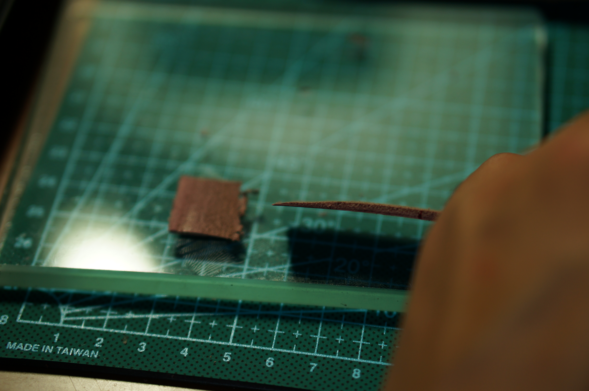
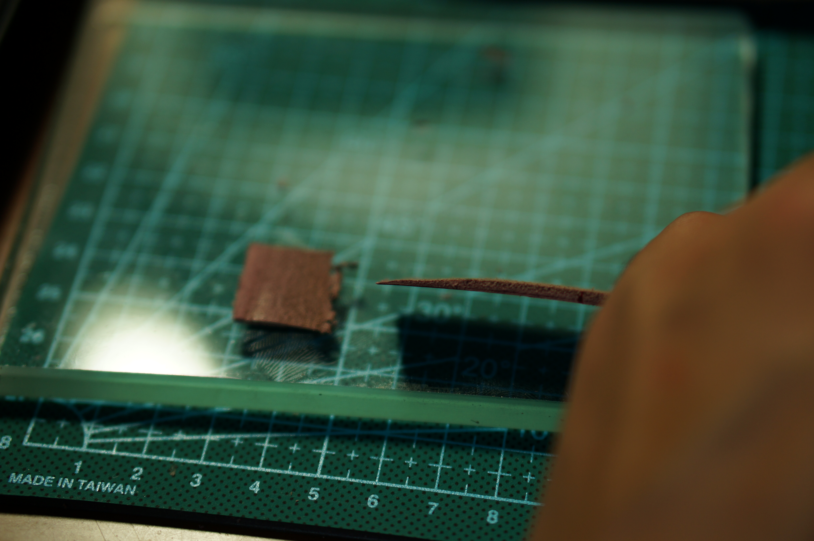

Hello, It's Joy.
My major at college is unexpectedly cool - Archival Science, and I appreciate learning it as this is where I got exposed to the analysis and design of information system and did a ton of group work. After trying product management at NIO, I confirmed my passion for user research that connects people and creating user-centered products that solves real life problems. Now, I am honing my UX skills at my dream graduate school and I can't wait to bring my energy to an amazing product team.
email: joymeng@umich.edu
linkedin:
https://www.linkedin.com/in/joymeng-22t24/
Education
School: University of Michigan, School of Information
Degree Seeking: Master of Science in Information
Track: User-centered Agile Development
Skill
Research: Contextual Inquiry, Usability Test,
Affinity Wall, Comparative Analysis,
Heuristic Evaluation, Ethnography
Design
:
Figma, Sketch, Paper Prototyping,
Wireframe, Personas, Scenario, QOC
Coding
:
Python, HTML/CSS, JavaScript, SQL
a little more about me
I do Seal Carving
used to make Leather Crafts


 



also, made several Bows